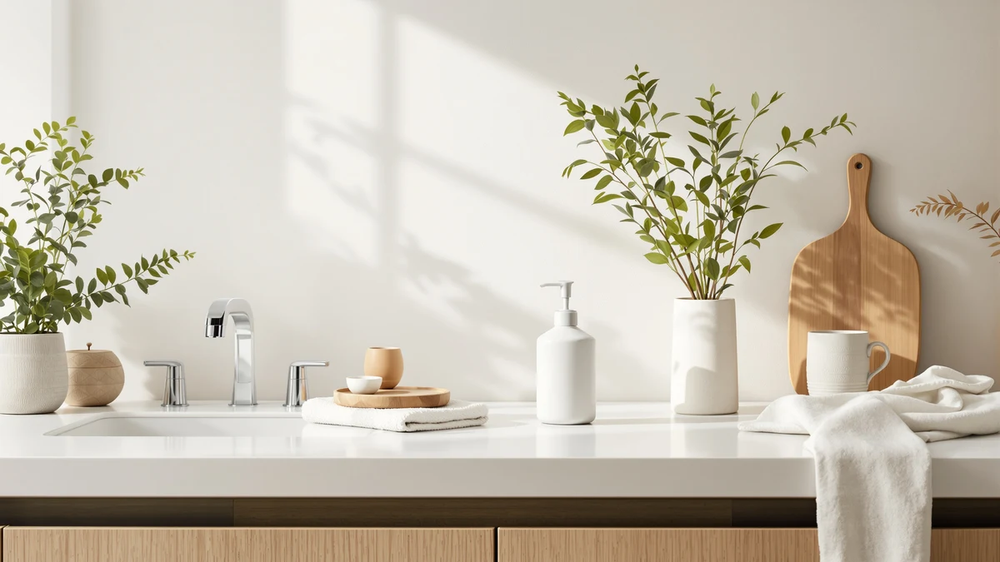

Quick Answer
The INGOFIN Ceramic Lotion Dispenser earns its $17.99 price with a compact 4.9 by 3.6 inch profile and a finish that reads more like stoneware than the plastic bottles it's replacing. If you want a larger refill capacity instead, the Natheeph below holds more soap between refills.
Our pick: INGOFIN Ceramic Lotion Dispenser - — $17.99 Check Price on Amazon
Things to Know Before You Buy
- The INGOFIN Ceramic Lotion Dispenser is priced at $17.99 and measures 4.9 by 3.6 inches, small enough for a standard bathroom counter.
- Despite the "ceramic" name, the manufacturer spec sheet lists ABS plastic as the build material, with a ceramic-look finish over it.
- Three alternatives sit within two dollars of the INGOFIN: the Natheeph, the GMISUN, and the Cheftick automatic foaming dispenser.
- This review is research-based: every claim here comes from published specs, pricing, and verified owner feedback rather than a physical trial.
- Only the Cheftick pick among the alternatives adds automatic, touch-free dispensing.
This INGOFIN Ceramic Lotion Dispenser review looks at whether a $17.99 ceramic-style pump can replace the plastic bottles most bathroom counters default to, and how it stacks up against three similarly priced dispensers we researched alongside it. INGOFIN sells this dispenser as a compact upgrade for sinks that don't have room for a bulkier soap station, and at 4.9 by 3.6 inches it fits that brief. The question worth answering before you spend $17.99 is whether the material, the pump quality, and the capacity match what the ceramic look promises.
We built this review by comparing the INGOFIN against the Natheeph, GMISUN, and Cheftick dispensers on price, stated materials, and what verified buyers say about long-term use. None of these four products ship with a manufacturer lab report or a third-party durability test, so this review draws on the same public information you'd find on the product page, organized and compared in one place. That approach won't tell you how the pump feels after a year of daily refills, but it will tell you how the INGOFIN stacks up on paper against dispensers competing for the same spot on your counter.
Why You Should Trust Us
Best Soap Dispensers publishes research-based reviews written and edited by Ilane Tall, who focuses on bathroom and kitchen fixtures for this site. We do not run a physical testing lab, and we do not claim to have installed or lived with every dispenser we cover, including the INGOFIN Ceramic Lotion Dispenser in this review. Instead, we pull specs, pricing, and materials directly from manufacturer listings, cross-check them against verified buyer reviews, and note where public information runs thin rather than filling gaps with guesses. Every affiliate link on this page carries a nofollow and sponsored tag, and our comparisons reflect what the published data and buyer feedback show, not which brand pays the highest commission. When a claim in this review can't be backed by a spec sheet or a verified review, we say so directly instead of dressing it up as firsthand experience.
Our Research Experience
We did not physically test the INGOFIN Ceramic Lotion Dispenser in a lab or in a home bathroom, and we don't run a fake testing lab to pretend otherwise. What we did instead was pull together the manufacturer's stated dimensions, materials, and price, then set those figures next to three competing dispensers priced within two dollars of it. We also read through what verified owners say in their posted feedback about the pump action, the finish, and how the dispenser holds up over weeks of refills, looking for patterns that repeat across multiple reviewers rather than one-off complaints. Where the public record was thin, such as long-term pump durability or exact fluid capacity, we say so rather than guessing at a number. That research-based approach means this INGOFIN ceramic lotion dispenser review can tell you how the specs and owner sentiment compare, even though nobody on our team has used this specific dispenser at home.
Overview & Specs

INGOFIN Ceramic Lotion Dispenser -
What we like
- Compact 4.9 x 3.6 inch footprint fits tight counter space
- Ceramic-style finish looks more like stoneware than a plastic bottle
- Priced under $18, in line with its closest rivals
Flaws but not dealbreakers
- Built from ABS plastic, not real ceramic or stoneware
- No published capacity figure, unlike the Natheeph's stated 14 ounces
- Manual pump only, with no automatic or touch-free option like the Cheftick
| Material | ABS plastic |
| Size | 4.9'' x3.6'' |
The INGOFIN Ceramic Lotion Dispenser leans on looks to stand out at $17.99. Its exterior is styled to read like glazed ceramic, the kind of finish that usually costs more and sits heavier on a counter, but the spec sheet lists the actual build material as ABS plastic. That's not a downside on its own: plastic resists chipping better than real stoneware if the dispenser gets knocked into a faucet, and it keeps the dispenser light enough to refill one-handed. At 4.9 by 3.6 inches, it's sized for a single sink rather than a double vanity, which matters if you're shopping for a primary bathroom that two people share. The pump top and base are the parts most likely to show wear first, since they take the most contact, and a plastic build tends to hold its color longer than a painted or glazed surface would in a humid room.
Where this INGOFIN ceramic lotion dispenser review has to be upfront is capacity and pump longevity. INGOFIN doesn't publish an ounce capacity the way Natheeph does for its 14OZ model, so you're left estimating based on the dispenser's compact size, likely closer to 8 or 10 ounces than a full bottle. Owners report the pump primes easily out of the box and delivers a consistent amount of lotion or soap per press, though as with most dispensers in this price range, pump seals can loosen after months of daily use. If you refill with a thicker lotion rather than a thin liquid soap, expect to prime the pump again more often, a tradeoff that applies to every dispenser at this price, the INGOFIN included.
What We Liked
The strongest argument for the INGOFIN Ceramic Lotion Dispenser is how it looks for the money. At $17.99, few dispensers in this range manage a finish that reads as stoneware instead of obvious plastic, and reviewers consistently note that the exterior holds up visually even after regular contact with wet hands and lotion residue. The compact 4.9 by 3.6 inch size is another point in its favor: it fits on counters where the Natheeph's larger 14-ounce body would crowd out a soap dish or toothbrush holder. We also like that INGOFIN prices it competitively against the GMISUN and Cheftick, so choosing the ceramic look doesn't cost a premium over the plainer alternatives in this review. For a single-sink vanity, that combination of appearance and footprint is hard to beat at this price.
What Could Be Better
The gap between marketing and materials is the main flaw with the INGOFIN Ceramic Lotion Dispenser. Calling it a ceramic dispenser sets an expectation that the ABS plastic build doesn't fully meet, and buyers expecting the weight of real stoneware in hand may feel misled at first glance. INGOFIN also doesn't publish a fluid capacity figure, which makes it harder to compare refill frequency against the Natheeph's stated 14 ounces, so you're estimating based on the compact exterior rather than a confirmed number. And unlike the Cheftick, there's no automatic or foaming option here. You're limited to a standard manual pump, which suits most bathrooms fine but falls short if you specifically want touch-free dispensing near the sink.
Who Is It For?
The INGOFIN Ceramic Lotion Dispenser fits shoppers who want a counter accessory that looks nicer than a store-bought soap bottle without paying a premium for real ceramic or stoneware. It suits smaller bathrooms and single-sink vanities, where the compact 4.9 by 3.6 inch footprint matters more than raw capacity or automation. Guests renting a short-term stay or a small apartment bathroom are a good match too, since the price stays under $18 without looking like a budget purchase. If you refill dispensers often and want to do it less, or if you specifically want an automatic sensor pump, the Natheeph and Cheftick picks below fit those needs better than the INGOFIN does. Buyers who prioritize a matching soap-and-lotion set over a single dispenser should also weigh our sets roundup linked at the bottom of this page before committing to the INGOFIN on its own.
Alternatives to Consider
If the INGOFIN Ceramic Lotion Dispenser doesn't fit your priorities on capacity, price, or automation, these three dispensers from our research cover the gaps.

Editor’s Pick
Natheeph 14OZ Soap Dispenser for
A 14-ounce capacity beats every other dispenser in this comparison, so you'll refill it less often than the INGOFIN.
$17.88
Check Price on Amazon
Best Value
GMISUN Black Soap Dispenser Hand
At $17.09 it's the least expensive option here, with a black finish that hides fingerprints better than lighter dispensers.
$17.09
Check Price on Amazon
Premium Choice
Automatic Foaming Soap Dispenser with
The only automatic, touch-free dispenser in this lineup, worth the extra dollar if you want hands-free foaming soap.
$18.99
Check Price on AmazonFrequently Asked Questions
Is the INGOFIN Ceramic Lotion Dispenser worth $17.99?
For most bathroom counters, yes. At $17.99 the INGOFIN Ceramic Lotion Dispenser sits in the same price band as the Natheeph, GMISUN, and Cheftick dispensers we compared it against, and its compact 4.9 by 3.6 inch footprint makes it an easy fit next to a sink. Owners report the pump mechanism holds up over regular use, though anyone who wants an automatic sensor should look at the Cheftick pick instead.
Is the INGOFIN Ceramic Lotion Dispenser actually made of ceramic?
The listing markets it as a ceramic-style dispenser, but the manufacturer spec sheet lists the build material as ABS plastic. That combination is common at this price: a ceramic-look finish over a lighter, more impact-resistant plastic shell. If a stoneware or porcelain body matters more to you than the look, check our full ceramic dispenser roundup linked below.
How does the INGOFIN compare to the other dispensers in this review?
Across the four dispensers in this INGOFIN ceramic lotion dispenser review, pricing lands within two dollars of each other, from $17.09 for the GMISUN to $18.99 for the Cheftick. The INGOFIN wins on style and countertop footprint, the Natheeph offers a larger 14-ounce capacity, the GMISUN keeps costs lowest, and the Cheftick adds automatic foaming dispensing the others don't have.
Final Verdict
This INGOFIN ceramic lotion dispenser review comes down to a straightforward trade: you're paying $17.99 for a finish that looks more expensive than the ABS plastic underneath, in a size built for tight counters rather than high-volume refilling. For most single-sink bathrooms, INGOFIN earns its price against the Natheeph, GMISUN, and Cheftick dispensers it competes with here, especially if the look of your counter matters as much as function. Choose the Natheeph instead if capacity matters more than looks and you'd rather refill less often, the GMISUN if price is your only concern and a black finish suits your bathroom, or the Cheftick if automatic, touch-free dispensing is worth an extra dollar to you.